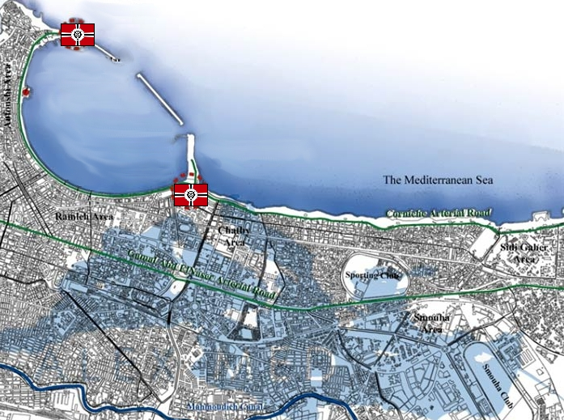

Alexandria Alexandria
North Africa, Egyptian Coast Coastal Desert Urban Fortress Von August A site with a long and ambitious history, Alexandria still stands in the Universal Century as one of the chief ports of the era. Shielded from the north by the mediterranean ocean, and the south by the Sahara desert, the city is difficult to launch an effective attack against. Further, its tactical position is clear, controlling the Suez canal to the East, as well as the mining operations of northern Africa. It is one of the TAFs primary frontline bases, and a key player in their operation to quickly move resources back to Side 3. Von August Von August is one of the most honorable base commanders in the duchy, with a reputation amongst his men for playing fair. He is reportedly very good with captives, and is held with high esteem by his men. However, Von August does not give the impression of being soft. He is a tenacious soldier, and often commands from the front lines in battle. Alexandria  |